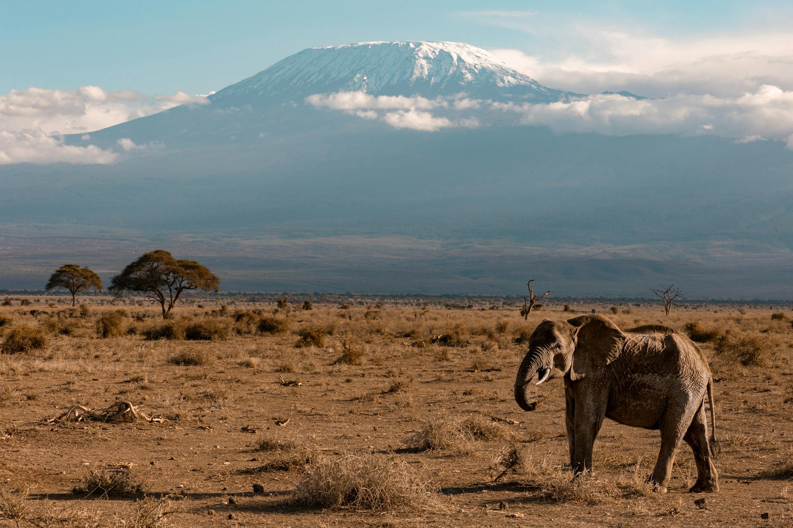

Serengeti Safari: Africa’s Wildest Adventure

Welcome to the Serengeti: Africa’s Wildlife Paradise
The Serengeti National Park is a sprawling, untamed wilderness that stretches across northern Tanzania. Famous for its breathtaking landscapes and the abundance of wildlife that call it home, the Serengeti is considered one of the world’s greatest wildlife reserves. Whether you're visiting to witness the awe-inspiring Great Migration or to spot the iconic "Big Five" animals—lion, elephant, buffalo, leopard, and rhinoceros—the Serengeti promises an unforgettable adventure.
Spanning over 5,700 square miles, the Serengeti is home to diverse ecosystems, including vast savannahs, riverbanks, and woodlands. The park’s untouched beauty offers travelers the opportunity to experience Africa’s wildlife in its most natural, raw form. This is a place where every safari game drive feels like an exploration into the heart of nature itself.
The Great Migration: Nature’s Spectacle
One of the most extraordinary natural events on Earth, the Great Migration occurs annually when over a million wildebeest, along with zebras and gazelles, journey across the Serengeti in search of fresh grazing grounds. The migration is driven by the changing seasons, and it creates an incredible spectacle that attracts tourists from all corners of the globe.
The animals travel in massive herds, crossing rivers teeming with crocodiles and navigating through thorny landscapes as they face the relentless threats of predators. The scene is breathtaking: dust swirls in the air, and the ground seems to tremble beneath the weight of thousands of hooves. Watching the wildebeest charge across the plains or crossing rivers is a once-in-a-lifetime experience that showcases the raw power and resilience of nature.
If you're lucky enough to time your visit with the migration’s peak, you may even witness dramatic moments like the crossing of the Mara River, where hungry crocodiles lie in wait. However, no matter when you visit, the Serengeti offers some of the best opportunities for game viewing, with animals constantly on the move, either in search of food, water, or shelter.
Game Drives: Encountering the Big Five
While the migration is an incredible spectacle, the Serengeti is also home to a vast array of wildlife that can be spotted year-round. One of the highlights of any Serengeti safari is the opportunity to encounter the Big Five—lion, elephant, buffalo, leopard, and rhinoceros. These animals are known for their elusive and often dangerous nature, making them highly sought after by safari-goers.
Lions, often seen lounging in the shade or hunting in groups, are the Serengeti’s apex predators. Early morning and late afternoon game drives offer the best chance to spot a lioness stalking prey or a pride lazing under an acacia tree. The majestic African elephants are often seen grazing peacefully in the open plains or cooling off in waterholes, while the buffaloes roam in large herds, their heavy presence impossible to miss.
Leopards, elusive and solitary, are more challenging to spot, but with patience and a bit of luck, you might catch sight of these graceful cats lounging in trees or silently prowling the underbrush. And while rhinos are rarer in the Serengeti due to their endangered status, conservation efforts are helping protect these incredible creatures, and a sighting, though rare, is still possible.
Hot Air Balloon Safari: A Bird’s Eye View
For an entirely different perspective of the Serengeti, consider embarking on a hot air balloon safari. Floating above the endless savannah at sunrise offers a unique opportunity to view the park’s landscapes from the sky. The sight of the golden plains below dotted with herds of animals is absolutely magical. As the sun rises, the colors of the Serengeti are revealed in a soft, golden glow, making this one of the most peaceful and awe-inspiring experiences you’ll ever have.
This bird’s-eye view of the wilderness is perfect for photography enthusiasts who want to capture the sprawling beauty of the park. And after landing, a celebratory champagne breakfast in the middle of the wilderness caps off the experience, creating memories that will last a lifetime.
Cultural Experiences: Immersing in Local Life
While the Serengeti itself is a wildlife paradise, Tanzania’s cultural heritage is also an important part of the experience. Many safaris offer the opportunity to visit Maasai villages, where you can learn about the traditions, customs, and lifestyle of one of Africa's most famous indigenous tribes.
The Maasai are semi-nomadic people known for their colorful dress and deep connection to the land. A visit to a Maasai village is a chance to witness their unique way of life, from their traditional homes (known as enkangs) to their elaborate ceremonies and dances. Engaging with the Maasai is a humbling experience that gives you a deeper understanding of the relationship between people and the land they inhabit.
For an even deeper cultural experience, consider taking a bush walk with a Maasai guide. These walks are an opportunity to learn about the medicinal plants, animals, and indigenous knowledge that have been passed down through generations.
Conservation and the Future of the Serengeti
The Serengeti is not only a place of adventure and beauty but also a center for important conservation efforts. With the rise in poaching, habitat loss, and climate change, protecting the park’s wildlife is a top priority for both local and international organizations. Efforts are underway to preserve the Serengeti’s ecosystems, including anti-poaching initiatives and wildlife corridors that allow animals to migrate freely.
By visiting the Serengeti, you are supporting these vital conservation efforts. As tourism grows, it is essential that visitors respect the rules and guidelines of the park to minimize human impact on the environment. Sustainable tourism ensures that future generations will be able to experience the magic of the Serengeti just as you have.
Final Thoughts: An Adventure Like No Other
A Serengeti safari is an adventure of a lifetime—one that brings you face to face with nature in its purest, most magnificent form. Whether you’re witnessing the drama of the Great Migration, tracking lions across the plains, or simply soaking in the vast beauty of the Serengeti, this is a place where every moment feels like a new discovery.
The Serengeti offers a chance to disconnect from the hustle and bustle of everyday life and immerse yourself in the wildness of the world. It’s a journey that will leave you with not only unforgettable memories but a deeper appreciation for the incredible diversity and power of the natural world.
So pack your bags, grab your camera, and get ready for the wildest adventure of your life in the Serengeti. The animals are waiting, and the adventure is just beginning.